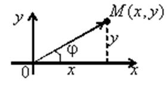
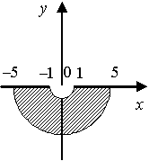

19.2. Изображение комплексного числа на плоскости. Тригонометрическая форма
комплексного числа

Так как определяется как
пара действительных чисел, то естественной геометрической интерпретацией является
изображение комплексного числа точкой  некоторой
плоскости с координатами .
некоторой
плоскости с координатами .
некоторой
плоскости с координатами .Такую плоскость называют комплексной, ось абсцисс – действительной
осью, ось ординат – мнимой осью. При этом устанавливается взаимно-однозначное
соответствие между множеством всех комплексных чисел и
множеством точек или множеством радиус-векторов
.
Введем на плоскости полярные
координаты . Длина вектора называется модулем комплексного
числа и обозначается  или
или  :
:
или :
Формула вычисления
модуля комплексного числа
Угол  между
радиус-вектором и положительным
направлением оси называют аргументом
комплексного числа : .
Угол определяется неоднозначно, с
точностью до слагаемого . Удобно работать
с приведенным аргументом , (либо ).
Для числа аргумент не определён. При этом
аргумент комплексного числа определяется следующим образом (для ):
между
радиус-вектором и положительным
направлением оси называют аргументом
комплексного числа : .
Угол определяется неоднозначно, с
точностью до слагаемого . Удобно работать
с приведенным аргументом , (либо ).
Для числа аргумент не определён. При этом
аргумент комплексного числа определяется следующим образом (для ):
между
радиус-вектором и положительным
направлением оси называют аргументом
комплексного числа : .
Угол определяется неоднозначно, с
точностью до слагаемого . Удобно работать
с приведенным аргументом , (либо ).
Для числа аргумент не определён. При этом
аргумент комплексного числа определяется следующим образом (для ):
Формула вычисления
аргумента комплексного числа
.
Практически, для определения решают
систему уравнений , и
изображают  вектором, чтобы определить, в каком
квадранте лежит точка. Так как , , то комплексное число
вектором, чтобы определить, в каком
квадранте лежит точка. Так как , , то комплексное число
 Тригонометрическая
форма записи комплексного числа
можно записать в следующем виде: ,
которое называют тригонометрической формой записи комплексного числа.
Тригонометрическая
форма записи комплексного числа
можно записать в следующем виде: ,
которое называют тригонометрической формой записи комплексного числа.
вектором, чтобы определить, в каком
квадранте лежит точка. Так как , , то комплексное число
Тригонометрическая
форма записи комплексного числа
можно записать в следующем виде: ,
которое называют тригонометрической формой записи комплексного числа.Найти множество точек комплексной плоскости, удовлетворяющих условию
Решение:
 ,
,  .
.Следовательно, искомое множество состоит из точек окружности
единичного радиуса, центр которой имеет координаты  .
.
.Дать геометрическое описание множества всех точек комплексной
плоскости, удовлетворяющих условиям:
Решение:
Запишем в алгебраической
форме , тогда из условия :
в алгебраической
форме , тогда из условия :.
Искомое множество: нижняя половина кольца с внутренним
радиусом и внешним радиусом .
